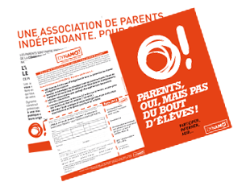

<!DOCTYPE html PUBLIC "-//W3C//DTD XHTML 1.0 Transitional//EN" "http://www.w3.org/TR/xhtml1/DTD/xhtml1-transitional.dtd">
<html xmlns="http://www.w3.org/1999/xhtml">
<head>
<meta http-equiv="Content-Type" content="text/html; charset=UTF-8" />
<title>Dynamo11 - Association de parents PARIS 11e</title>

<link href="dynamo.css" rel="stylesheet" type="text/css" />

<script type="text/javascript">
function Affiche_OBJ(){
	var Arg = arguments; // Récup liste des arguments passée à la fonction
	var Obj;
	for( var i=0; i< Arg.length; i++){ // On parcours la liste
	Obj = document.getElementById( Arg[i]); // Récup Objet correspondant
	if( Obj){
	Obj.style.display = "block";
	}
	}
}

//----------------------------------------------
// Masquage d'un Objet déclaré dans le document...
//----------------------------------------------
function Masque_OBJ(){
var Arg = arguments; // Récup liste des arguments passée à la fonction
var Obj;
for( var i=0; i< Arg.length; i++){ // On parcours la liste
Obj = document.getElementById( Arg[i]); // Récup Objet correspondant
if( Obj){
Obj.style.display = "none";
	}
	}
}
function MM_swapImgRestore() { //v3.0
  var i,x,a=document.MM_sr; for(i=0;a&&i<a.length&&(x=a[i])&&x.oSrc;i++) x.src=x.oSrc;
}
function MM_preloadImages() { //v3.0
  var d=document; if(d.images){ if(!d.MM_p) d.MM_p=new Array();
    var i,j=d.MM_p.length,a=MM_preloadImages.arguments; for(i=0; i<a.length; i++)
    if (a[i].indexOf("#")!=0){ d.MM_p[j]=new Image; d.MM_p[j++].src=a[i];}}
}

function MM_findObj(n, d) { //v4.01
  var p,i,x;  if(!d) d=document; if((p=n.indexOf("?"))>0&&parent.frames.length) {
    d=parent.frames[n.substring(p+1)].document; n=n.substring(0,p);}
  if(!(x=d[n])&&d.all) x=d.all[n]; for (i=0;!x&&i<d.forms.length;i++) x=d.forms[i][n];
  for(i=0;!x&&d.layers&&i<d.layers.length;i++) x=MM_findObj(n,d.layers[i].document);
  if(!x && d.getElementById) x=d.getElementById(n); return x;
}

function MM_swapImage() { //v3.0
  var i,j=0,x,a=MM_swapImage.arguments; document.MM_sr=new Array; for(i=0;i<(a.length-2);i+=3)
   if ((x=MM_findObj(a[i]))!=null){document.MM_sr[j++]=x; if(!x.oSrc) x.oSrc=x.src; x.src=a[i+2];}
}
</script>

</head>


<body bgcolor="#FF6600" topmargin="0" marginwidth="0" marginheight="0" onload="MM_preloadImages('images/onglets-ecole-ON.png')">

<!--*************************** 
CALQUE AVERTISSEMENT 
*******************************-->

			<div class="calqueTemp" align="center" id="OBJ_3"  OnClick="Masque_OBJ('OBJ_3');">
	<div class="page" align="left" style="margin-bottom:auto; margin-top: 50px; background-color:transparent;">
    <!--<p class="headerTemp" style="margin-top:10px;">Thierry Gourdin&nbsp;&nbsp;Identités graphiques</p>-->
    
    <p class="edito-txt" style="opacity:0.95; font-family: HelveticaNeueLTPro-Lt, Helvetica, Arial, sans-serif; color:#000; margin-right:350px; font-size:14pt; line-height:16pt;"><span style="font-size:20pt;">Bonjour et bienvenue !</span><br /><br />
    Le site dynamo11.org est en cours d'installation, nous nous excusons d'avance pour la gêne occasionnée.<br /><br />
    
    Cependant, vous trouverez derrière ce calque une page unique qui vous permettra, en attendant le site complet, d'avoir quelques informations importantes sur notre association et sur les groupes Dynamo11 qui représentent les parents d'élèves dans les écoles du quartier Nation / Charonne / Voltaire.<br /><br />
	Sur cette page, seul le menu "Les écoles" est donc actif.<br />
<br />
	
    Une question? Un commentaire sur le site?… contact@dynamo11.org<br />
	À très bientôt sur le site complet.<br />
<br />

	L'équipe DYNAMO11</p>
    
    <p class="avertissement"><a href="#" class="avertissement" OnClick="Masque_OBJ('OBJ_3');" style="margin-top:-5px; padding-left:5px; padding-top:4px;" >x&nbsp;&nbsp;&nbsp;masquer ce calque</a></p>
	</div>
</div>


<!--***************************
BLOC HEADER 
***************************-->


<div class="backpage">

		    <div class="header1">
        
         
         
            <div class="onglets"><a href="#ecoles" onmouseout="MM_swapImgRestore()" onmouseover="MM_swapImage('Onglet OFF','','images/onglets-ecole-ON.png',1)"></a>
            </div>
    </div>
	
    
<!--*************************** 
PAGE / CONTENUS 
***************************-->

    
<div class="page">


    <!--***********************
    BLOC AGENDA 
    ***************************-->
        
            <div class="agenda">
            <p class="agenda-txt"><span class="agenda-date">27/09/13</span> : Réunion d'information parents d'élèves au collège Pilâtre de Rozier à 19h00…<br />
    		--</p>
            <p class="agenda-txt"><span class="agenda-date">28/09/13</span> : 10h30, éunion du comité de soutien RESF (Titon – Souzy – Pilâtre – Anne Frank - St. Bernard – Faidherbe – Voltaire – Dumas) à l'école Titon. Pour refuser l'inacceptable…<br />
    		--</p>
            <p class="agenda-txt"><span class="agenda-date">11/10/13</span> : élections des représentants de parents d'élèves aux Conseils d'école (maternelles et élémentaires) et aux Conseils d'administration (collèges)…<br />
    		--</p>
            </div>

    <!--***********************
    BLOC 	ADHÉREZ ! 
    ***************************-->
        
            <div class="adherez">
              <a class="link" href="pdf/2013-09-Info-ADHESION-Dynamo-rentree-orange.pdf"></a>
    		
            <p class="adherez-txt"><a class="link" href="pdf/2013-09-Info-ADHESION-Dynamo-rentree-orange.pdf">Téléchargez</a> le bulletin d'adhésion 2013/2014 au format pdf</a>, remplissez-le et retournez-le nous accompagné de votre règlement par courrier postal à :</p>
            
            <p class="adherez-txt"><span class="txt-orange">Association DYNAMO 11<br />
			c/o Sarah Goodridge<br />
			21 rue Marcelle <br />
			93260 Les Lilas</span><br /></p>
			</div>

    <!--***********************
    SOS STAGES 
    ***************************-->
        
            <div class="stage">
             <p class="stage-txt">SOS STAGE est une initiative des Parents Pilâtre Dynamo11 pour offrir à chaque élève de 3eme 
un stage pour découvrir, expérimenter, comprendre, le travail et la vie en entreprise.<br />
<br />
			<font style="font-weight:bold; color:#FC0;">AIDEZ-NOUS !</font> Renseignements et propositions : 06 64 13 14 55 / sostages@dynamo11.org<br /><br />
			<a href="pdf/2012-09-18-SOS-STAGE-Info.pdf" title="Brochure SOS STAGE pdf" style="text-decoration:none; color:#F60;">Téléchargez ici</a> la brochure d'information (</p>
			</div>
			
            
    <!--***********************
    BLOC ÉDITO
    ***************************-->

            
            <div class="edito">
            
            <p class="exergue">s'informer,<br />
            participer,<br />
            agir, pour<br />
            le bien-être<br />
            et la réussite<br />
            de tous<br />
            les élèves…</p>
            	
            <p class="edito-titre">Parents, oui,<br />
            mais pas du bout<br />
            d'élèves…</p>
            <p class="edito-txt">Une association de parents, dans les écoles de notre quartier? Une de plus, qui se dit, autonome, ancrée localement et qui s'immisce dans le débat politique national de surcroit?</p>
            
            <p class="edito-txt">Pourquoi donc ? Avec quels moyens, quelle efficacité ? </p>
			<p class="edito-txt">Et comment peut-elle exister parallèlement aux associations nationales, au sein du système éducatif (corps enseignant, rectorat, État, collectivités territoriales…), face aux multiples enjeux locaux et nationaux ?</p>
            
            <p class="edito-txt">Ces questions, au moment de choisir de vous impliquer dans l'action d'un groupe de parents d'élèves dans une école, au moment de vous exprimer par le vote sur les listes de parents d'élèves, ces questions, vous vous les posez peut-être, sûrement… Nous non.<br />
            
			<a id="OBJ_2"  href="#" class="lirePlus" onclick="Affiche_OBJ('OBJ_1');Masque_OBJ('OBJ_2')">Lire plus…</a>
			</p>
            
			<p id="OBJ_1" class="edito-txt2">Devant les situations, les besoins, les enjeux, sur le terrain de chacun des établissements scolaires de notre quartier, sur celui plus large et plus transversal de l'Éducation Nationale, nous nous sommes retrouvés et rassemblés.<br /><br />
            
             Devant l'urgence d'actions fondées sur un engagement clair et une implantation locale retrouvés et réalistes, devant la nécessité de l'expression de la différence, de vérités constatées, hors de la pression des systèmes et des accointances politiciennes à peine dissimulées, nous nous sommes reconnus.<br /><br />
             
			Devant les projets de réformes ou de refondation portés par nos gouvernements successifs pour l'enfant, l'école, l'enseignement, l'instruction, la culture, la mixité sociale, la famille, nous nous sommes engagés.<br /><br />
            
			Et Dynamo11 est né. Mouvement spontané, dynamique et déterminé.<br /><br />
            
			Avec des objectifs simples et fondamentaux :<br /><br />
            
			• la mise en œuvre effective de l'égalité d'accès à une instruction épanouissante ET de qualité, dans une école publique et laïque, ostensiblement ouverte à la réussite de TOUS les enfants, quelles que soient leurs origines sociales et culturelles.<br /><br />
            
			• la présence acceptée des parents, la prise en compte de leurs convictions lors de débats ouverts dans toutes les décisions qui touchent à l'éducation, l'instruction, les loisirs des enfants dans le système éducatif.<br /><br />
            
            <span class="exergue" style="display:inline-block; float:left; margin-right:30px; background-color:#F30;">
            Tout ce qui concerne, implique, l'école, <br />
			le système éducatif, est politique…</span>
            
			Depuis 2006, date de sa création, Dynamo11 est parvenu, à devenir un interlocuteur, un partenaire, crédible, reconnu et écouté de toutes les instances, de toutes les équipes qui sont parties prenantes de la Communauté Éducative dans notre secteur.<br /><br />
            
			Depuis 2006, de nombreuses actions, à l'élémentaire Dumas (2009), au collège Pilâtre de Rozier (2011), à l'élémentaire Titon (2012-2013), de nombreuses prises de positions (les goûters récréatifs en maternelles, la semaine de 4 jours et 1/2…), ont permis à Dynamo11 d'exister et de faire exister les parents de manière plus directe, plus pertinente et aussi plus efficace.<br /><br />
            
			Face au désengagement du collectif que subit la société actuellement, Dynamo11 propose, oppose, un retour à l'intérêt général, à l'entraide et à la solidarité à destination de tous, et notamment des plus démunis, dans un système qui privilégie encore trop souvent les élites.<br /><br />
            
			Parce que nous faisons comme NOUS pensons qu'il faut faire, disons ce que NOUS pensons qu'il faut dire. NOUS, parents d'élèves, simples citoyens, engagés et impliqués, face à des systèmes très organisés, le plus souvent hermétiques et verrouillés.<br /><br />
            
			Une gageure ?… Nous voulons croire que non.<br /><br />

			L'école est au cœur de la Cité, de la vie et de l'avenir des individus, du pays. Il s'y forme là les futurs citoyens, tous acteurs si possible, et nous le souhaitons, de demain. Nous leur devons de montrer l'exemple.<br /><br />
            
			Pour cette raison, Dynamo11 n'est pas une association apolitique car toute décision qui concerne et implique l'École a des conséquences sur notre avenir, sur la vie de la Cité, des citoyens et du pays. En ce sens, et en ce sens-là surtout, tout ce qui a à voir avec le système scolaire EST politique.<br /><br />
            
			Nous l'assumons, tout comme nous assumons notre envie de revenir à de vrais débats, de vrais échanges d'idées, constructifs et innovants.<br />
<br />
 
			DYNAMO11<br />
            
            
            <a  href="#" class="lirePlus" onclick="Masque_OBJ('OBJ_1');Affiche_OBJ('OBJ_2')" style="display:block; margin-left:500px;">X Fermer</a></p>
			</p>
            </div>
			
 <a name="ecoles">           


    <!--***********************
    BLOC LES ÉCOLES 
    ***************************-->

            
            <div class="ecoles">
                	<div class="groupecole">
                        <p class="ecolenom" align="center">VOLTAIRE<br /><span class="ecoletype">ÉLÉMENTAIRE</span></p>
                        <p class="ecolespec">
                        email :<br />
                        <font color="#FF6600">parents.evoltaire<br />
                        @dynamo11.org</font></p>
                        <p class="ecolespec">Tél : <font color="#FF6600">06 15 70 24 96</font>
                        </p>
                        <p class="ecolespec" style="padding-bottom:20px;">
                        Responsables<br />
                        <font color="#FF6600">Christel Turnani<br />
                        Rachid Benmekki</font>
                        </p>
                    </div>
                    
                	<div class="groupecole">
                        <p class="ecolenom" align="center" style="background-color:#ffe61e; color:#000;">Titon<br /><span class="ecoletype" style="color:#000;">élémentaire</span></p>
                        <p class="ecolespec">
                        email :<br />
                        <font color="#FF6600">parents.titon<br />
                        @dynamo11.org</font></p>
                        <p class="ecolespec">Tél : <font color="#FF6600">06 89 58 28 01</font>
                        </p>
                        <p class="ecolespec">
                        Responsable<br />
                        <font color="#FF6600">François Guedj</font>
                        </p>
                	</div>
                    
                	<div class="groupecole">
                        <p class="ecolenom" align="center" style="background-color:#93C; letter-spacing:-1px;">Popincourt<br /><span class="ecoletype">Maternelle</span></p>
                        <p class="ecolespec">
                        email :<br />
                        <font color="#FF6600">parents.popincourt<br />
                        @dynamo11.org</font></p>
                        <p class="ecolespec">Tél : <font color="#FF6600">06 61 78 29 38</font>
                        </p>
                        <p class="ecolespec">
                        Responsable<br />
                        <font color="#FF6600">Stéphanie Piette</font>
                        </p>
                	</div>
                    
                	<div class="groupecole">
                    <p class="ecolenom" align="center" style="background-color:#F90;">Keller<br /><span class="ecoletype">ÉLÉMENTAIRE</span></p>
                    <p class="ecolespec">
                    email :<br />
					<font color="#FF6600">parents.keller<br />
					@dynamo11.org</font></p>
                    <!--<p class="ecolespec">Tél : <font color="#FF6600">06 74 63 85 38</font>
                    </p>-->
                    <p class="ecolespec">
                    Responsable<br />
                    <font color="#FF6600">Carine Grancher<br /></font>
                    </p>
                	</div>
                 
                 	<div class="groupecole">
                    <p class="ecolenom" align="center" style="background-color:#F09;">VOLTAIRE<br /><span class="ecoletype">Maternelle</span></p>
                    <p class="ecolespec">
                    email :<br />
					<font color="#FF6600">parents.mvoltaire<br />
					@dynamo11.org</font></p>
                    <p class="ecolespec">Tél : <font color="#FF6600">06 67 55 87 51</font>
                    </p>
                    <p class="ecolespec" style="padding-bottom:20px;">
                    Responsable<br />
                    <font color="#FF6600">Nafi Guillotin<br /></font>
                    </p>
                    </div>
                    
                	<div class="groupecole">
                    <p class="ecolenom" align="center" style="background-color:#0C0;">Dumas<br /><span class="ecoletype">élémentaire</span></p>
                    <p class="ecolespec">
                    email :<br />
					<font color="#FF6600">parents.dumas<br />
					@dynamo11.org</font></p>
                    <p class="ecolespec">Tél : <font color="#FF6600">06 62 08 82 89</font>
                    </p>
                    <p class="ecolespec">
                    Responsable<br />
                    <font color="#FF6600">Dominique Dury</font>
                    </p>
                	</div>
                    
                	<div class="groupecole">
                    <p class="ecolenom" align="center" style="background-color:#F00; letter-spacing:-1px;">St Bernard<br /><span class="ecoletype">Élémentaire</span></p>
                    <p class="ecolespec">
                    email :<br />
					<font color="#FF6600">parents.stbernard<br />
					@dynamo11.org</font></p>
                    <p class="ecolespec">Tél : <font color="#FF6600">06 06 06 06 06</font>
                    </p>
                    <p class="ecolespec">
                    Responsable<br />
                    <font color="#FF6600">Florence Tissot</font>
                    </p>
                	</div>
                    
                	<div class="groupecole">
                    <p class="ecolenom" align="center" style="background-color:#00b4ff;">Pilâtre<br /><span class="ecoletype">Collège</span></p>
                    <p class="ecolespec">
                    email :<br />
					<font color="#FF6600">parents.pilatre<br />
					@dynamo11.org</font></p>
                    <p class="ecolespec">Tél : <font color="#FF6600">06 64 13 14 55</font>
                    </p>
                    <p class="ecolespec">
                    Responsable<br />
                    <font color="#FF6600">Thierry Gourdin</font>
                    </p>
                	</div>
                  </div>
                  
                  <div class="work">
                    
                 	  <p class="edito-txt" style="margin-left:0px; margin-right:0px; color:#F60;">Vous êtes parent d'élève élu(e) dans une autre école du 11<sup>eme</sup> arrondissement ?<br />
					Contactez-nous pour échanger, partager et travailler ensemble…<br />
					Tél : 06 17 09 67 69 / email : contact@dynamo11.org</p></td>
                  </div>
           
           
            
    <!--***********************
    BLOC DOSSIERS 
    ***************************-->

            
            <div class="dossiers" align="left">
            
              <p class="edito-txt" style="margin-top:50px;">Cette année encore, <b>les rythmes et le temps péri-scolaire</b> seront au cœur de notre action associative. La mise en place de cette réforme (dans la précipitation) à Paris pose, après quelques semaines de rentrée, de multiples questions tant aux parents d'élèves qu'aux équipes pédagogiques, aux personnels, aux équipes d'animation qui vivent les difficultés au quotidien… <a class="lirePlus" style="margin-top:0px; font-size:9pt;">À lire, notre dossier (bientôt en ligne)</a></p>
              
              <p class="edito-txt" style="margin-top:50px;"><b>La place des parents d'élèves au Conservatoire du XI<sup>eme</sup></b> est un sujet nouveau, révélé à la fin de l'année scolaire précédente quand les élection des représentants de parents d'élèves au Conseil d'établissement se sont déroulées dans l'opacité la plus totale. Mobilisés, certains parents ont décidé de donner au Conservatoire la représentation parentale qu'il mérite. Dynamo11 vous en rend compte. <a class="lirePlus" style="margin-top:0px; font-size:9pt;">À suivre (bientôt en ligne)</a></p>
            </div>
  
            
<!--***********************
IMAGE BACKGROUND 
***************************-->
            
            <div class="illustr">
            
            </div>
    
</div>
            
            
<!--***********************
BLOC FOOTER
***************************-->

            
           <div class="footer">
             <p class="sitemap-title1">Plan du (futur) site</p>
             <table class="sitemap" cellspacing="0" cellpadding="0" align="center">
              <tr>
                <td class="sitemap"><p class="sitemap-title2">L'association</p>
                	<p class="sitemap-txt">
                    • Un peu d'histoire<br />
					• Le projet<br />
					• Le positionnement<br />
					• L'organisation<br />
					• Les moyens<br />
					• Transparence</p></td>
                
                <td class="sitemap"><p class="sitemap-title2">Les écoles</p>
                	<p class="sitemap-txt">• Dumas<br />
					• Keller (élémentaire)<br />
					• Pilâtre<br />
					• Popincourt<br />
					• ST-Bernard<br />
					• Titon<br />
                    • Voltaire (élémentaire)<br />
					• Voltaire (maternelle)</p></td>
                
                <td class="sitemap"><p class="sitemap-title2">les activités</p>
                	<p class="sitemap-txt">
                    • Les groupes écoles<br />
					• Les réunions<br />
					• Les ateliers<br />
					• SOS Stages<br />
					• Caisse de Solidarité</p></td>
                
                <td class="sitemap"><p class="sitemap-title2">les infos</p>
                	<p class="sitemap-txt">
                    • L'agenda développé<br />
                    • Les comptes-rendus<br />
					• Documents divers<br />
					• La boite à outils</p></td>
               
                <td class="sitemap"><p class="sitemap-title2">Les dossiers</p>
                	<p class="sitemap-txt">
                    • Les rythmes scolaires<br />
					• Le Conservatoire du XIe<br />
					• La Caisse des Écoles</p></td>
                
                <td class="sitemap"><p class="sitemap-title2">Contact</p>
                	<p class="sitemap-txt">
                    • Contactez-nous<br />
					• Liens utiles</p></td>
              </tr>
            </table>
           </div>
</div>
</body>
</html>
